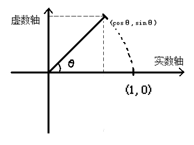

-
四元数的定义
四元数是一种高阶的复数，定义如下
Q = w + xi + yj + zk其中i、j、k为虚部单位，这里简单回顾一下高中知识
对于复数 z = a + bi ，则有
‘a’ 为z的实部，‘bi’ 为z的虚部，只有虚部没有实部的复数叫纯虚数
i * i = -1
z 的共轭复数 = a - bi
复数模长公式：
复数的乘法一般表示缩放和旋转，复数的加法一般表示位移
-
复数的乘法与旋转
既然四元数是复数，那么先来看复数和旋转的关系。
对于两个复数：z1 = a + bi，z2 = c + di，可以分别用两个向量表示：
z1 = ( a , b )，z2 = ( c , d )
那么对于两个复数的相乘，可以得到：
= ac−bd+adi+bdi
单独对 做变形得：
={\lvert{z_1}\rvert \left [ \begin{matrix} cosθ & -sinθ \\ sinθ & cosθ \end{matrix} \right ]}带入刚才的式子得：
z_1z_2 = \lvert{z_1} \rvert \left[ \begin{matrix} cosθ & -sinθ \\ sinθ & cosθ \end{matrix} \right]\left[ \begin{matrix} c \\ d \end{matrix} \right ]
对于右边这部分，假设c = 1 ， d = 0时：
\left[ \begin{matrix} cosθ & -sinθ \\ sinθ & cosθ \end{matrix} \right] \left[ \begin{matrix} 1 \\ 0 \end{matrix} \right] = \left[ \begin{matrix} cosθ \\ sinθ \end{matrix} \right] = (cosθ,sinθ)
画在坐标轴上可得：

这就说明当z2是一个单位向量时，乘一个复数，相当于把这个向量逆时针旋转了θ度；当z2 = （0,1）时，带入得(-sinθ,cosθ)，相当于顺时针旋转了θ度。
上面的结果再乘上得
z_2 = (\lvert{z}\rvert cosθ , \lvert{z}\rvert sinθ)
这就相当于把向量z2放大了倍。
至此可以得出结论：一个向量（复数）乘以一个复数，相当于对该向量进行了旋转并放大了该复数模长倍（该结论对四元数同样适用）。
-
四元数（Quaternion）
在三维空间中，为了能更好地表示旋转并避免万向节锁的出现，因此引入了四元数（Quaternion）。
四元数描述了一个旋转轴和一个旋转角度，，四元数的数学公式可以这样表示：
{Q = cos\frac{θ}{2} + xsin \frac{θ}{2} i + ysin \frac{θ}{2} j + zsin \frac{θ}{2} k }
其中(x,y,z)表示
旋转轴向量，θ表示旋转角度或者用向量表示（w放前面还是后面都一样，只是因为unity里w作为第四个参数，所以这里放后面）：
Q = (xsin\frac{θ}{2},ysin\frac{θ}{2},zsin\frac{θ}{2},cos\frac{θ}{2})
-
四元数乘法
向量乘上一个四元数的含义是该向量按照绕着这个四元数所描述的旋转轴(x,y,z)
逆时针旋转了θ(顺时针旋转-θ)（如果题目只是说绕轴旋转了θ，那么带公式的时候就带-θ，API里一般就用θ）
四元数乘上一个向量（四元数） 时得到的新向量有公式：
（这里的-1表示四元数的逆而不是-1次方）
逆的求法就是利用四元数的共轭除以模：
这里不再证明公式，只说公式的应用：
例题：已知向量V = (1,0,1)，求向量绕 (0,1,0)旋转90°后所得的新向量。
解：
将向量V扩充至四元数：V = (1,0,1,0)
依题意得：
旋转角 θ= -90
四元数：Q = (0,sin(-45°),0,cos(-45°)) = (0,-\frac{ \sqrt{2} }{2},0,-\frac{ \sqrt{2} }{2})
共轭四元数：
四元数的模：
四元数的逆：
所以：
QV =
这里先说右手定则：比如遇见了ij 那么先画一个i-j-k的坐标系，然后四指从i指向j轴，大拇指所指的方向就是i * j 的值： ij = -k，ji = k，ki = -j .......所以上面的式子可以变为：
所以：
因此旋转后向量为Vnew = (1,0,-1)
-
unity中四元数的API
-
变量
| 静态变量 | 描述 |
|---|---|
| eulerAngles | 返回旋转的欧拉角表示 |
| this[int] | 分别使用 [0]、[1]、[2]、[3] 访问 x、y、z、w 分量 |
| w、x、y、z | 四元数的四个分量 |
identity：单位四元数
| 静态方法 | 描述 |
|---|---|
| Angle(rot1，rot2) | 返回两个四元数（旋转）之间的角度 |
| Euler | 返回一个围绕 Z 轴旋转 z 度、围绕 X 轴旋转 x 度、围绕 Y 轴旋转 y 度的四元数 |
| AngleAxis(angle, axis) | 返回一个围绕 向量axis 旋转 angle 度的四元数 |
| Dot(rot1,rot2) | 两个四元数的乘积 |
| FromToRotation(rot1,rot2) | 返回一个能从rot1旋转到rot2的四元数 |
| Inverse(rot) | 返回一个四元数的逆（相反的旋转） |
| Lerp(a,b,t) | 在 a 到 b 的旋转之间按 t 进行线性插值运算并对结果进行标准化处理，t的范围为[0,1] |
| LerpUnclamped(a,b,t) | 线性插值运算，但是t无范围要求 |
| LookRotation(forward,upwards) | 返回一个能让Z轴对齐forward，让y轴对齐upward 所需要的旋转四元数 |
| RotateTowards(from,to,path) | 每帧从from旋转 path 个单位到to |
| Slerp(a,b,t) | 在 a 到 b 的旋转之间按 t 进行球形插值运算，t 被限制在 [0, 1] 范围内 |
| SlerpUnclamped(a,b,t) | 在 a 到 b 的旋转之间按 t 进行球形插值运算，但是t无范围要求 |
| 公共方法 | 描述 |
|---|---|
| Set(x,y,z,w) | 设置现有四元数的 x、y、z 和 w 分量。 |
| SetFromToRotation(from,to) | 设置成一个从 from 旋转到 to 的四元数 |
| SetLookRotation(forward,upwards) | 把旋转设置成Z轴与forward对齐，让y轴与upward对齐所需要的旋转四元数 |
ToAngleAxis(axis,angle)设置成绕axis轴旋转angle角度的四元数